分屏工具tmux
我们来回顾一下 😌
- 上次下载了中 🀄️ 文谚语
- 输出重定向了中文谚语
- 理解词典和颜色
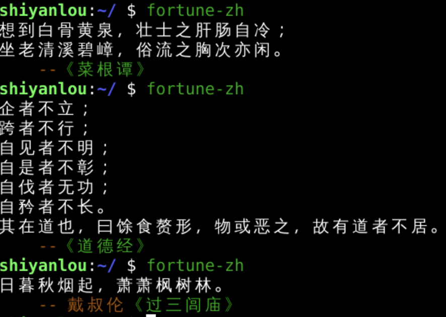
- 我们这次想要分屏！🤔
tmux
- 首先下载tmux
- 进入tmux
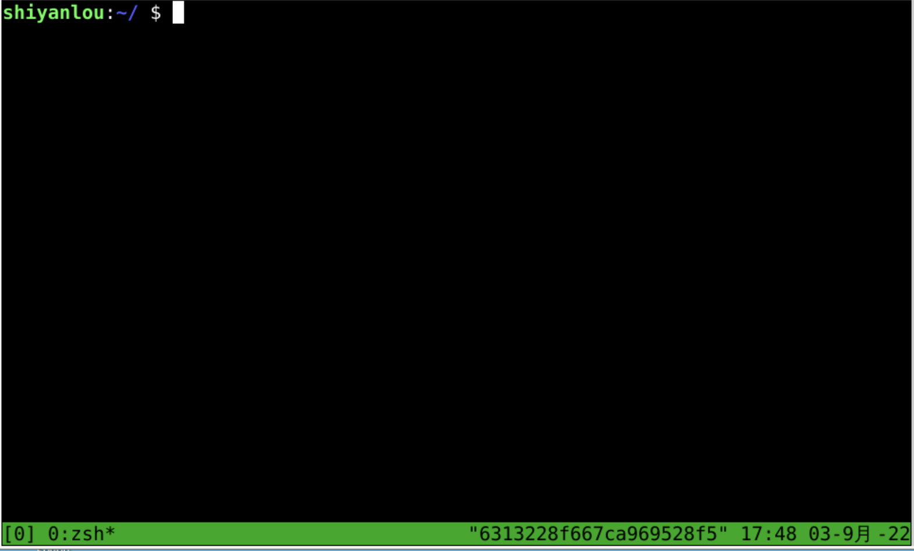
- 退出tmux
- exit
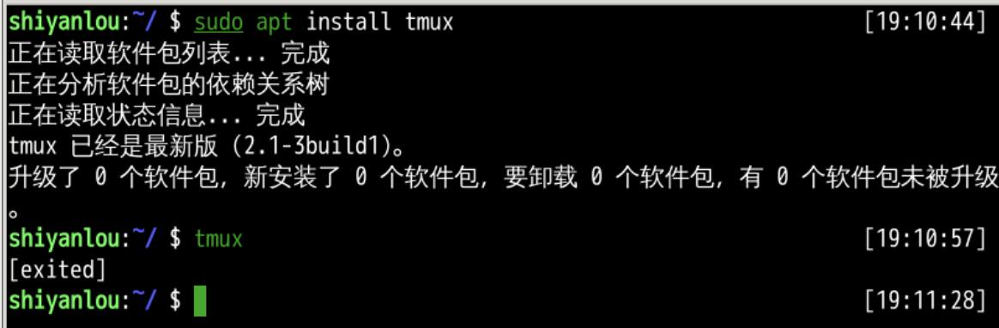
- 键入exit这种退出
- 是真的结束进程
- 除此之外
- 还有另一种退出
退出detach
- 脱离会话
- tmux detach
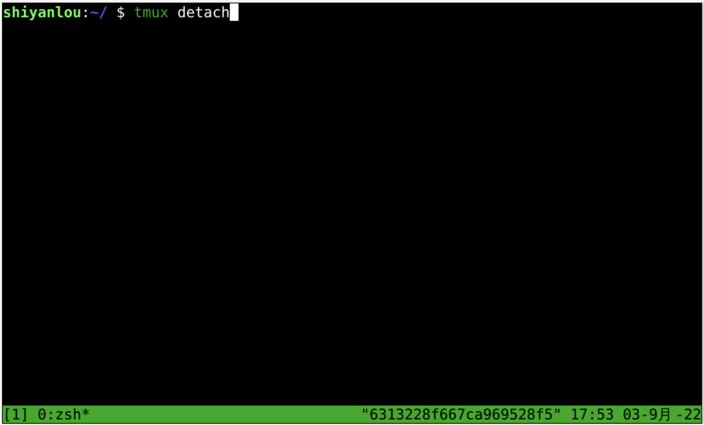
- detach的意思是脱离
- 脱离什么
- 脱离当前session 0
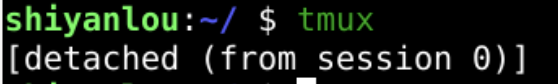
- 什么是session？
session
- session翻译为会话
- 原来指的是法庭定期的开庭

- 后来也指一段时间的活动，比如
- 音乐会
- 学年
- 摄影
- 录音
- 这里的session指的是和服务器之间的固定关联
- 除了用tmux detach
- 之外还可以用快捷键
快捷键分离会话
- 快捷键是ctrl + b d
- 先用左手小指按下ctrl不松手
- 然后左手中指按下b
- 然后同时松手
- 再按一下d
- 作用也是和当前会话(session)分离(detach)
- 但不是从当前会话(session)中退出(exit)
- 只是分离(detach)
- 会话(session)还在
- 回到一般终端后
- 可以用tmux ls
- 观察所有分离的会话
- 可以用tmux ls
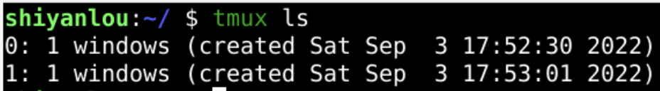
重新连接会话
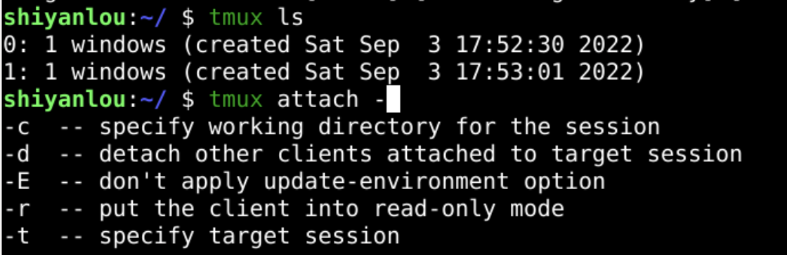
- 也可以用
- 意思是连接上原来的第0号session
- 如果忘了的话，可以输入tab
- 查看提示
- tmux attach -t 0
- 继续连接这个session
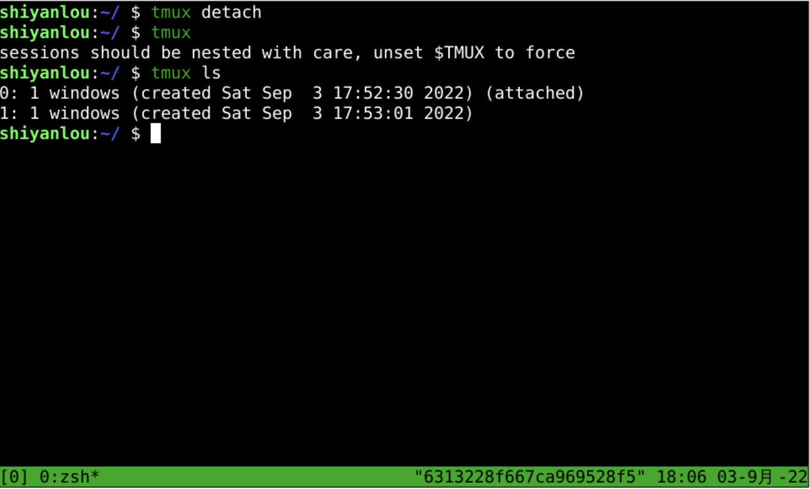
- 现在就连接上上次的会话(ession)了
- 还能看到上次detach那句话呢
自建session
- 重新detach
- 在detach回到一般状态后
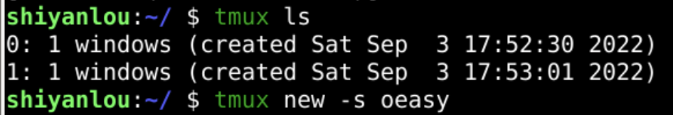
- 可以新建一个session
- tmux new -s oeasy
- 建立一个新的session名字叫做oeasy
- 这时就有了3个session
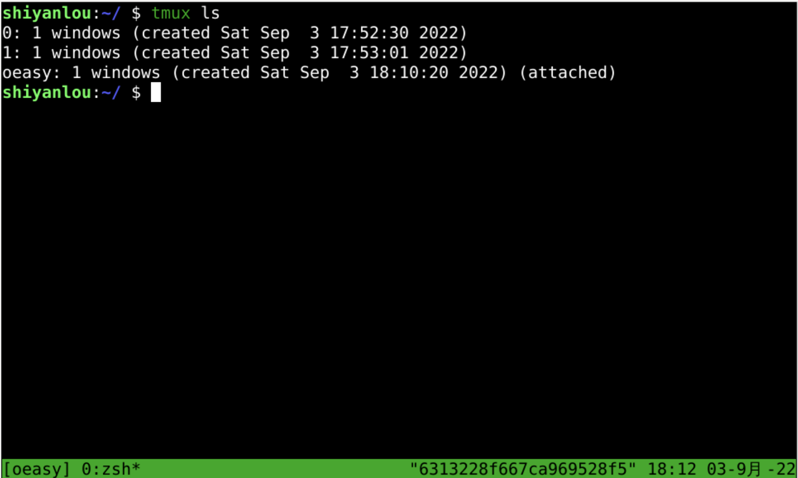
- 可以切换session吗
切换session
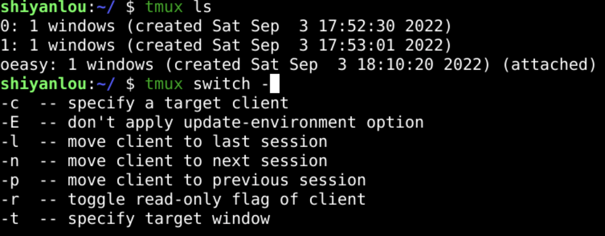
- tmux switch -t 0
- 切换到名字是0的session
- 当前session后面会有attached
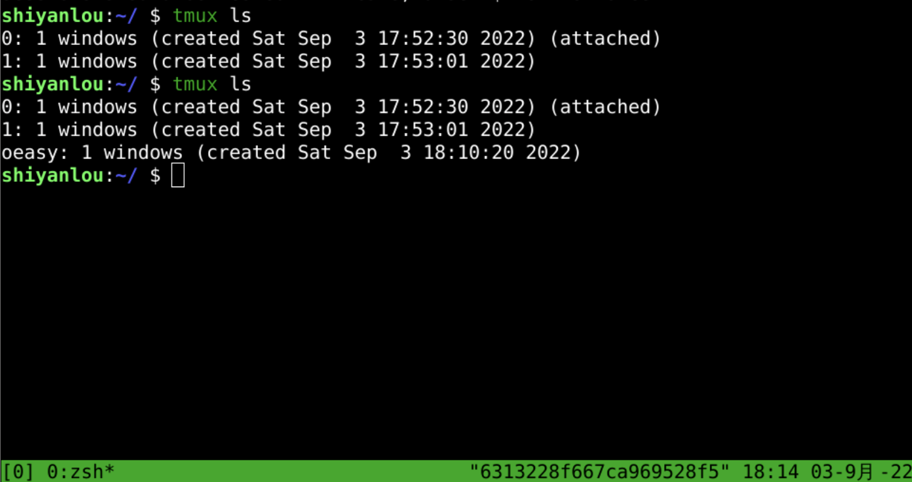
- tmux switch -t oeasy
- 切换到名字是oeasy的session
- 反复练习切换
- 0这个session的名字有点太特殊了
- 会话(session)可以改名字吗？
session改名
- tmux rename-session -t 0 o2z
- 把原来叫做0的session改名为o2z
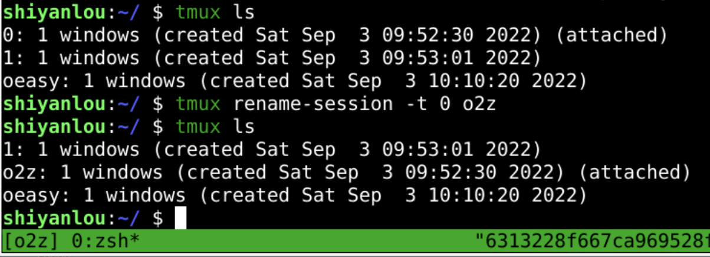
- 可以把另一改成o3z么？
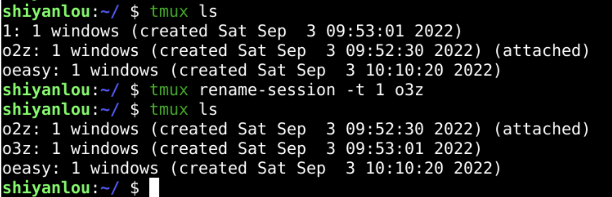
- 会话(session)可以删除么？
删除session
- 回车进入session
- 回到命令行
- tmux ls列出所有session
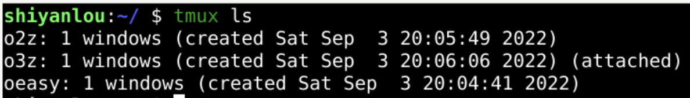
- 总共3个会话(session)
- 当前session为o3z
- 尝试删除
- tmux kill-session -t session_name
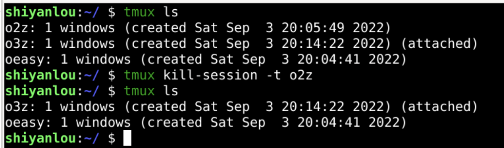
- 先删除名为o2z的会话(session)
- 再删除名为oeasy的会话(session)
tmux管理器
- 列出会话
- tmux ls
- ctrl+b s
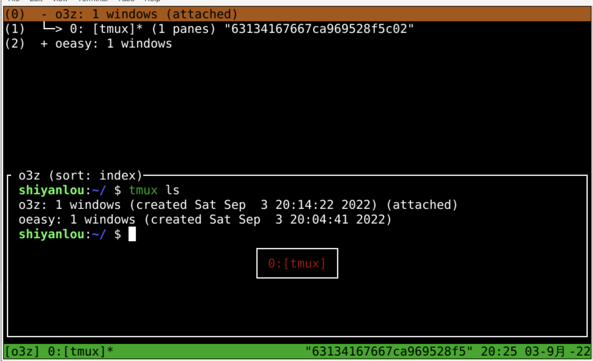
- 上下方向键可以上下切换session
- 回车可以选择session
- +键上→可以打开+
- 我们总结一下tmux的session
会话总结
- 新建会话
- tmux
- tmux new -s session_name
- 列出所有会话
- tmux ls
- 进入会话
- tmux attach -t session_name
- 切换会话
- tmux switch -t session_name
- 退出会话
- tmux detach
- ctrl+b d
- 删除会话
- tmux kill-session -t session_name
- 会话改名
- tmux rename-session -t old new
- 当前会话改名
- ctrl+b $
- 会话管理器
- ctrl+b s

- 每个session后面有个
1 windows是什么意思?🤔 - 下次再说👋🏻